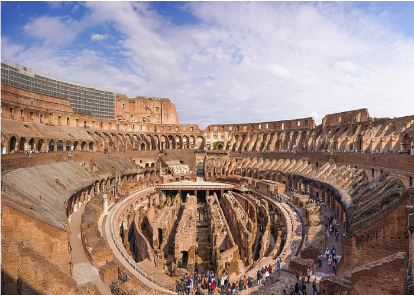

Coliseu de Roma

O Coliseu de Roma é uma construção considerada uma das sete maravilhas do mundo moderno. Seu nome original, em latim, é Amphitheatrum Flavium, que significa Anfiteatro Flaviano, porque ele foi construído durante a dinastia flaviana. É uma obra pomposa, símbolo do poder na Roma Antiga.
Essa edificação passou por terremotos, saques e várias outras adversidades, mas sempre foi constantemente restaurado, o que lhe garantiu a entrada para a seleta lista de sete maravilhas do mundo moderno, estando em visitação até hoje. Na Antiguidade, era utilizado para apresentações, sobretudo simulações de batalhas e lutas de gladiadores.
Resumo sobre o Coliseu
- O nome Coliseu de Roma remete à estátua de Nero de 35 metros de altura que ficava ao seu lado e se chamava Colosso Nero.
- Seu nome original era Anfiteatro Flaviano.
- O Coliseu é constituído por arcos e colunas, quatro andares, 45 metros de altura e foi construído com variadas pedras.
-
- Era utilizado para apresentações diversas, sendo as mais conhecidas as batalhas de gladiadores.
- A história do Coliseu remete à dinastia flaviana, pois foi iniciado pelo primeiro soberano desta, Vespasiano, terminado por seu filho Tito e reformado por seu outro filho, Domiciano.
- O Coliseu, na atualidade, está com parte de sua estrutura caída. Mesmo assim, é um dos pontos principais de visitação em Roma, chegando a receber 6 milhões de turistas por ano.
- É uma das sete maravilhas do mundo moderno, tendo ganhado tal título em 2007.
Nome do Coliseu
O nome original do Coliseu era Anfiteatro Flaviano, pois foi construído durante a dinastia flaviana, que governou entre os anos 69 d.C. e 96 d.C. com os imperadores Vespasiano (quem começou a construção, reinando de 69 d.C. a 79 d.C.), Tito (filho de Vespasiano que governou de 79 d.C. a 81 d.C. e concluiu a obra) e Domiciano (que governou de 81 d.C. a 96 d.C. e reformou o Coliseu).
O Coliseu foi assim rebatizado por causa de uma grande estátua (35 metros de altura) de bronze chamada Colosso de Nero que ficava no lugar onde o anfiteatro foi construído. Essa estátua era imponente, sendo que o imperador Nero tinha mandado fazê-la em sua própria homenagem, mas foi destruída após sua morte.
Características do Coliseu
Veja a seguir as principais características da estrutura do Coliseu de Roma.
- Tinha uma capacidade de público de cerca de 50 mil pessoas (quando foi construído) a 90 mil pessoas (após a reforma que foi realizada).
- Sua altura é de 45 metros.
- O piso da arena era de madeira e media 87 m x 55 m.
- Abrigava, no subsolo, jaulas e celas.
- Foi composto por diversos arcos redondos, que formam sua estrutura até hoje.
- Existem três tipos de coluna na construção: dóricas, jônicas e coríntias.
- Os materiais utilizados em sua construção foram pedras como mármore, ladrilho, tufo e travertina.
Usos do Coliseu
O Coliseu era usado principalmente para entretenimento, que se dava pelas apresentações de gladiadores, motivo pelo qual é bastante conhecido. Era também sede de outros espetáculos, como caças. Pintores utilizavam o espaço para produzirem. Com o passar do tempo, entre vários anfiteatros de Roma, este se tornou o principal.
Além disso, o Coliseu era usado para simulações de batalhas navais. Há a sugestão de que haveria um canal d’água embaixo dele, pois assim era possível encher a arena e depois retirar a água. Durante esse tipo de simulação, além de grandes navios, eram apresentados animais treinados para nadar, como touros e cavalos.
História do Coliseu
O Coliseu começou a ser construído pelo imperador Vespasiano, o primeiro da dinastia flaviana, no ano 72 d.C., no entanto ele morreu antes que a obra fosse concluída. A construção do Coliseu foi finalizada por seu filho Tito, que acabou também outras edificações grandiosas iniciadas pelo pai, como as termas. Assim, o Coliseu terminou de ser erguido em 80 d.C., oito anos após seu início.
O objetivo de Vespasiano era ser bem-visto pela população romana ao oferecer-lhes entretenimento, o qual ficou conhecido como parte da “política do pão e circo”. Ele mandou derrubar a casa de Nero, drenou o lago e iniciou a construção que lhe traria prestígio como símbolo da dinastia, apontada como poderosa em um tempo de esplendor romano.
Quando a edificação foi inaugurada por Tito, apenas um ano depois da morte de seu pai, alguns contratempos aconteciam, como a erupção do vulcão Vesúvio, em 79 d.C., uma peste, além da lembrança então recente do grande incêndio que ocorreu sob o império de Nero, em 64 d.C.
Com tantas catástrofes, Tito quis dar à população muito entretenimento, na tentativa de apaziguar as crises. Assim, logo após inaugurado, o Coliseu abrigou jogos que duraram 100 dias, chamados Jogos Pródigos.
O Coliseu passou por vários acontecimentos em tantos anos de existência. A construção encarou diversos tremores. Historiadores aferem que o tremor inicial ocorreu no ano de 523. No século XIX, outro terremoto assolou as colunas do piso superior, e em 1231, a frente do Coliseu de Roma desabou por causa de um significativo abalo sísmico.
A construção também foi danificada por saques, resultado de conquistas e dominações de outros povos e dinastias. Dois papas investiram dinheiro diretamente do Vaticano para restaurá-lo. Trata-se de uma construção que já passou por várias restaurações.
Coliseu na atualidade
Atualmente, o Coliseu recebe cerca de 6 milhões de turistas por ano, sendo a maior atração de Roma. Abaixo, veja uma imagem de turistas visitando sua parte interna. A visita guiada ao Coliseu, ao Fórum e ao Palatino em conjunto custa cerca de 40 euros (ou 200 reais).